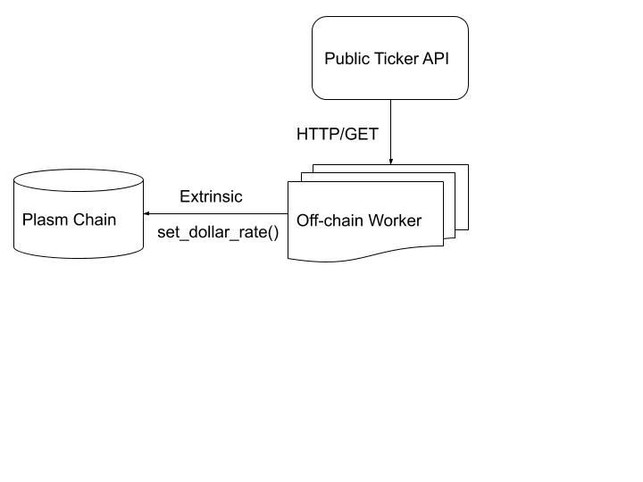

Real-time Lockdrop
As Real-time Lockdrop we mean process that held on already launched network. In comparation to Genesis Lockdrop that held before network launch to prepare genesis block token distribution, Real-time Lockdrop runs on live network to continue token distribution process. Plasm Multi-Lockdrop described at https://docs.plasmnet.io/Plasm Network/TokenDesign.html. First Lockdrop in sequence is Genesis lockdrop but second and next is Real-time lockdrops.
Real-time Lockdrop Module
Plasm Network implements Real-time Lockdrop approach using Substrate runtime module with name plasm-lockdrop.
This module consist of multiple parts and use Off-chain workers launched on network authorities as powerful oracles
that provide off-chain information into Plasm Network.
Dollar Rate Oracle
This simple oracle implemented using Off-chain Workers and fetch BTC/ETH/EOS/etc. token price via HTTP requests on authorities.

Dollar price filtered using Medial filter to prevent high price fluctuation between measurements.
Claim Voting Oracle
As same as dollar rate oracle claim voting oracles checks that tokens in different chains was really locked according to protocol and votes for user request to mint Plasm native token for user.
BTC locking user story
- Using DApp User generate p2sh address for given unlocker public key and lock duration.
- Using wallet User send BTC transaction to generated address.
- Using DApp user send extrinsic to Plasm Network with BTC transaction hash and locking parameters.
- Off-chain workers get Lockdrop checking request from user.
- Off-chain workers fetch BTC transaction data using HTTP from public source.
- Off-chain workers vote on chain to approve/decline user request.
- When User request reach enough votes, he send
claimextrinsic to get tokens on unlocker address (derivered from unlocker public key). - User receive Plasm token during BTC lockdrop.
Estimation time of processing request (except BTC confirmation time): ~2-3 minutes.